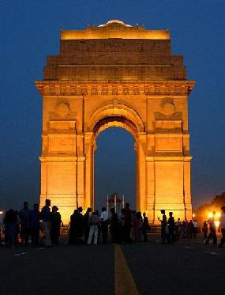

INDIA GATE
Situated on the Rajpath in New Delhi,the India Gate was originally called the 'All India War Memorial' is a monument built by Edwin Lutyens to commemorate the Indian Army|Indian soldiers who died in World War I and the European influence in Afghanistan , Afghan Wars. The foundation stone was laid on 10 February, 1921 by the Duke of Connaught.
){kind=link}
The names of the soldiers who died in these wars are inscribed on the walls. It was completed in 1931.
.The 42 metre tall India Gate is situated such that many important roads spread out from it. Traffic passing around India Gate used to be continuous till the roads were closed to the public due to terrorist threats. The lawns around Rajpath are thronged by people during the night, when the India Gate is lit up. The India Gate also has some resemblance to the Arc de Triomphe of Paris.
Inscribed on top of India Gate in capital letters is the line:
"To the dead of the Indian armies who fell honoured in France and Flanders Mesopotamia and Persia East Africa Gallipoli and elsewhere in the near and the far-east and in sacred memory also of those whose names are recorded and who fell in India or the north-west frontier and during the Third Afgan War."
It is today one of the most famous monuments in Delhi.